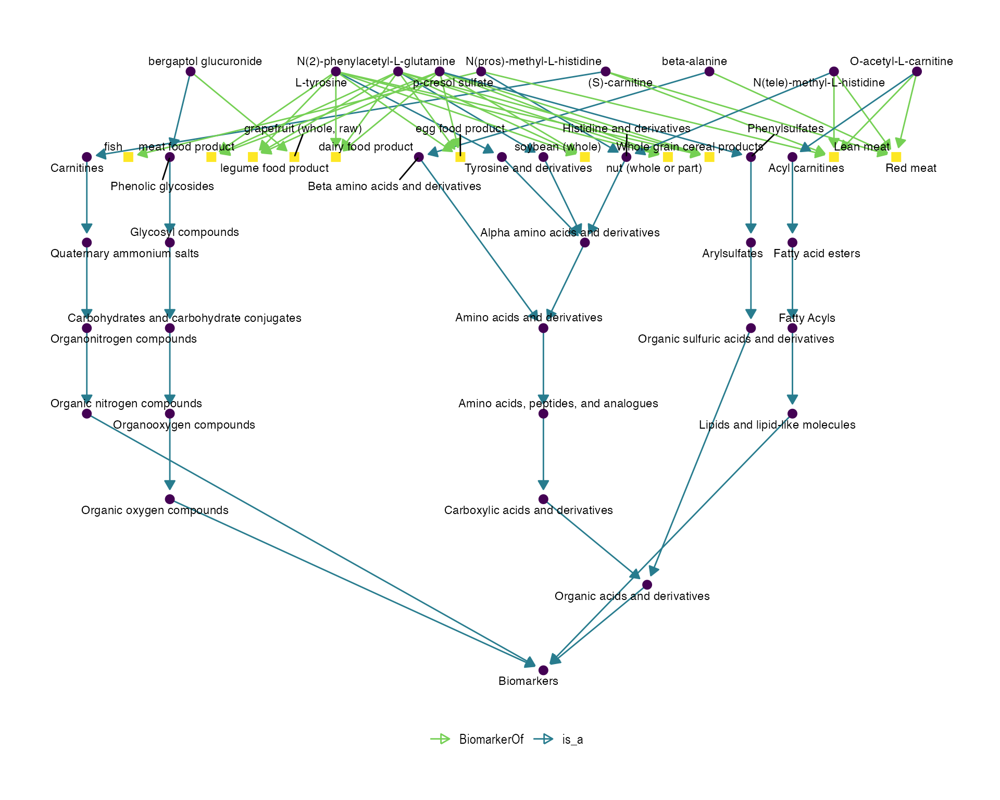

vignettes/food_enrichment_analysis.Rmd
food_enrichment_analysis.RmdCompiled date: 2021-01-14
Last edited: 2021-01-14
License: GPL-3
Run the following code to install the Bioconductor version of the package.
# install.packages("BiocManager")
BiocManager::install("fobitools")fobitools
You can also load some additional packages that will be very useful in this vignette.
metaboliteUniverse and metaboliteList
In microarrays, for example, we can study almost all the genes of an organism in our sample, so it makes sense to perform an over representation analysis (ORA) considering all the genes present in Gene Ontology (GO). Since most of the GO pathways would be represented by some gene in the microarray.
This is different in nutrimetabolomics. Targeted nutrimetabolomics studies sets of about 200-500 diet-related metabolites, so it would not make sense to use all known metabolites (for example in HMDB or CHEBI) in an ORA, as most of them would not have been quantified in the study.
In nutrimetabolomic studies it may be interesting to study enriched or over represented foods/food groups by the metabolites resulting from the study statistical analysis, rather than the enriched metabolic pathways, as would make more sense in genomics or other metabolomics studies.
The Food-Biomarker Ontology (FOBI) provides a biological knowledge for conducting these enrichment analyses in nutrimetabolomic studies, as FOBI provides the relationships between several foods and their associated dietary metabolites.
Accordingly, to perform an ORA with the fobitools package, it is necessary to provide a metabolite universe (all metabolites included in the statistical analysis) and a list of selected metabolites (selected metabolites according to a statistical criterion).
Here is an example:
# select 300 random metabolites from FOBI
idx_universe <- sample(nrow(fobitools::idmap), 300, replace = FALSE)
metaboliteUniverse <- fobitools::idmap %>%
slice(idx_universe) %>%
pull(FOBI)
# select 10 random metabolites from metaboliteUniverse that are associated with 'Red meat' (FOBI:0193), 'Lean meat' (FOBI:0185) , 'egg food product' (FOODON:00001274), or 'grape (whole, raw)' (FOODON:03301702)
fobi_subset <- fobitools::parse_fobi() %>%
filter(FOBI %in% metaboliteUniverse) %>%
filter(id_BiomarkerOf %in% c("FOBI:0193", "FOBI:0185", "FOODON:00001274", "FOODON:03301702")) %>%
slice(sample(nrow(.), 10, replace = FALSE))
metaboliteList <- fobi_subset %>%
pull(FOBI)
fobitools::ora(metaboliteList = metaboliteList,
metaboliteUniverse = metaboliteUniverse,
subOntology = "food",
pvalCutoff = 0.01,
adjust = "fdr")FALSE Time difference of 0.1752939 secs
FALSE Time difference of 0.3250411 secs
FALSE Time difference of 0.451658 secs
FALSE Time difference of 0.5739491 secs| classId | className | success | classSize | pvalue | pvalueAdj |
|---|---|---|---|---|---|
| FOBI:0193 | Red meat | 4 | 7 | 0.0000 | 0.0001 |
| FOODON:00001256 | dairy food product | 6 | 14 | 0.0000 | 0.0000 |
| FOODON:00001274 | egg food product | 4 | 10 | 0.0001 | 0.0004 |
| FOBI:0185 | Lean meat | 3 | 5 | 0.0003 | 0.0007 |
| FOODON:00001006 | meat food product | 4 | 13 | 0.0004 | 0.0009 |
| FOODON:03301415 | soybean (whole) | 4 | 22 | 0.0034 | 0.0063 |
metaboliteList termsThen, with the fobi_graph function we can visualize the metaboliteList terms with their corresponding FOBI relationships.
terms <- fobi_subset %>%
pull(id_code)
# create the associated graph
fobitools::fobi_graph(terms = terms,
get = "anc",
labels = TRUE,
legend = TRUE)
sessionInfo()
#> R version 4.0.2 (2020-06-22)
#> Platform: x86_64-apple-darwin17.0 (64-bit)
#> Running under: macOS 10.16
#>
#> Matrix products: default
#> BLAS: /Library/Frameworks/R.framework/Versions/4.0/Resources/lib/libRblas.dylib
#> LAPACK: /Library/Frameworks/R.framework/Versions/4.0/Resources/lib/libRlapack.dylib
#>
#> locale:
#> [1] es_ES.UTF-8/es_ES.UTF-8/es_ES.UTF-8/C/es_ES.UTF-8/es_ES.UTF-8
#>
#> attached base packages:
#> [1] stats graphics grDevices utils datasets methods base
#>
#> other attached packages:
#> [1] kableExtra_1.3.1 dplyr_1.0.2 fobitools_0.99.24 BiocStyle_2.18.1
#>
#> loaded via a namespace (and not attached):
#> [1] fs_1.5.0 bit64_4.0.5 webshot_0.5.2
#> [4] httr_1.4.2 rprojroot_2.0.2 evd_2.3-3
#> [7] tools_4.0.2 R6_2.5.0 rpart_4.1-15
#> [10] DBI_1.1.0 colorspace_2.0-0 nnet_7.3-14
#> [13] tidyselect_1.1.0 gridExtra_2.3 tictoc_1.0
#> [16] curl_4.3 ontologyIndex_2.5 bit_4.0.4
#> [19] compiler_4.0.2 textshaping_0.2.1 rvest_0.3.6
#> [22] xml2_1.3.2 desc_1.2.0 labeling_0.4.2
#> [25] slam_0.1-48 bookdown_0.21 scales_1.1.1
#> [28] sigora_3.0.5 pkgdown_1.6.1 systemfonts_0.3.2
#> [31] stringr_1.4.0 digest_0.6.27 rmarkdown_2.5
#> [34] pkgconfig_2.0.3 htmltools_0.5.0 RecordLinkage_0.4-12.1
#> [37] highr_0.8 rlang_0.4.10 rstudioapi_0.13
#> [40] RSQLite_2.2.2 farver_2.0.3 generics_0.1.0
#> [43] qdapRegex_0.7.2 vroom_1.3.2 magrittr_2.0.1
#> [46] textclean_0.9.3 ada_2.0-5 Matrix_1.2-18
#> [49] Rcpp_1.0.5 munsell_0.5.0 viridis_0.5.1
#> [52] lifecycle_0.2.0 stringi_1.5.3 yaml_2.2.1
#> [55] ggraph_2.0.4 MASS_7.3-53 grid_4.0.2
#> [58] blob_1.2.1 parallel_4.0.2 ggrepel_0.9.0
#> [61] crayon_1.3.4 lattice_0.20-41 graphlayouts_0.7.1
#> [64] splines_4.0.2 knitr_1.30 pillar_1.4.7
#> [67] igraph_1.2.6 clisymbols_1.2.0 glue_1.4.2
#> [70] evaluate_0.14 data.table_1.13.6 BiocManager_1.30.10
#> [73] vctrs_0.3.6 tweenr_1.0.1 gtable_0.3.0
#> [76] purrr_0.3.4 polyclip_1.10-0 tidyr_1.1.2
#> [79] assertthat_0.2.1 ggplot2_3.3.3 xfun_0.19
#> [82] ggforce_0.3.2 prodlim_2019.11.13 xtable_1.8-4
#> [85] tidygraph_1.2.0 ff_4.0.4 e1071_1.7-4
#> [88] ragg_0.4.0 class_7.3-17 survival_3.2-7
#> [91] viridisLite_0.3.0 tibble_3.0.4 memoise_1.1.0
#> [94] lava_1.6.8.1 ellipsis_0.3.1 ipred_0.9-9Pol Castellano-Escuder, Raúl González-Domínguez, David S Wishart, Cristina Andrés-Lacueva, Alex Sánchez-Pla, FOBI: an ontology to represent food intake data and associate it with metabolomic data, Database, Volume 2020, 2020, baaa033. DOI: https://doi.org/10.1093/databa/baaa033